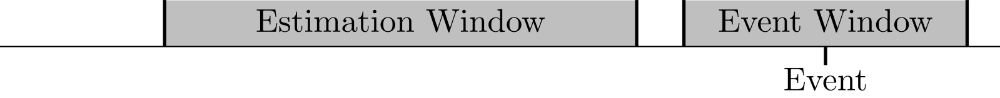

AbnormalReturns Documentation
This package provides functionality for running firm-specific regressions commonly used to calculate abnormal stock returns (actual stock return minus a benchmark). These are common in event studies in finance and economics and often require running a large number of regressions.
Most of the documentation is currently in the example.
Motivation
When estimating abnormal returns, it is common to estimate how the firm's return typically responds during an estimation window and use those predicted results in an event window:

The exact length of the estimation and event windows varies, but are typically about 150 and 3-5, respectively. The estimation is typically is a linear regression of firm specific return on market-wide factors.
The Problem
It is typical to estimate these for a large amount of firm events. For example, there are over 600,000 firm earnings announcements (when a firm announces bottom line earnings for a quarter) since 1990. Sometimes, it is also necessary to use multiple models, so it is possible to run run several million regressions.
The typical method do do this is:
- Join the market information to the firm specific information (which means repeating a lot of market information, which can be difficult depending on size of the datasets)
- Doing a range join based on the estimation window (this can again repeat a lot of information if the estimation windows overlap)
- Aggregating the data
- Repeat the process to bring the estimated results into the event window.
The joins in these steps are especially costly. On a sample of 1 million firm events for 10,000 simulated firms, InMemoryDatasets.jl (the only Julia package I am aware of that can do a range join) took 68 seconds to complete the join in step 2. This is very fast compared to other methods (SAS takes over 7 minutes), but it also takes up a lot of space in memory (20+ GiB).
This Package
This package uses a custom data structure to avoid repeating the data. It organizes the same data above in just under 20 seconds and is typically smaller in memory than the original datasets.
After the data is ingested, it is easy to run regressions and use those estimated values in an event window. In a benchmark on those 1 million firm events, this package can run all the regressions in under 3 seconds. It is also not necessary to do another range join for the event window, meaning that part takes less than a second.
Acknowledgements
This package would not be possible without BusinessDays.jl, which is used for all of the date operations in this package and StatsModels.jl, which provides an incredible @formula macro and the functionality that comes with that.